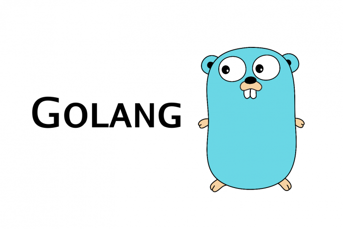
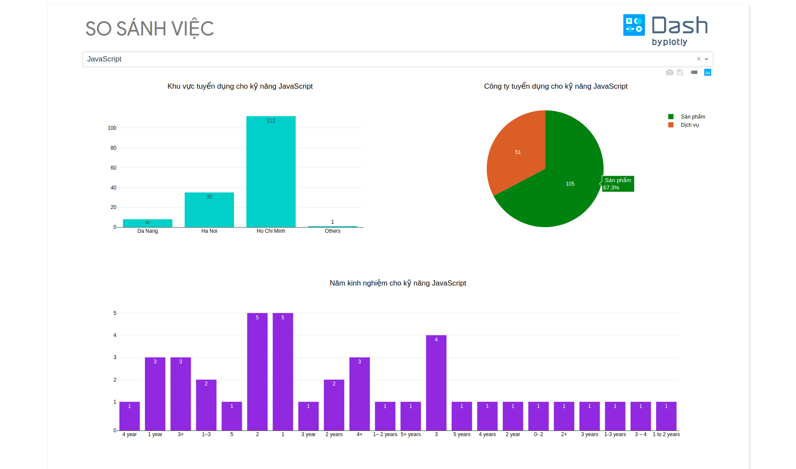
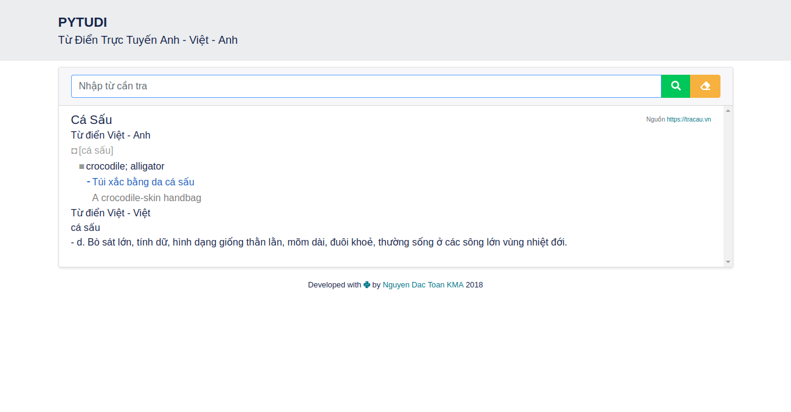

Giới thiệu
-
Trong công việc hàng ngày, nhiều lúc chúng ta cần chuyển đổi văn bản từ các file dạng word, excel, powerpoint,.. sang định dạng pdf. Văn bản pdf là viết tắt của Portable Docunment Format là một định dạng tập tin văn bản tài liệu …
Trong công việc hàng ngày, nhiều lúc chúng ta cần chuyển đổi văn bản từ các file dạng word, excel, powerpoint,.. sang định dạng pdf. Văn bản pdf là viết tắt của Portable Docunment Format là một định dạng tập tin văn bản tài liệu …


Unit test - Kiểm thử mức đơn vị là một mức kiểm thử phần mềm với mục đích dùng để kiểm tra kiến trúc nội tại của chương trình. Đây là mức kiểm tra nhỏ nhất trong quy trình kiểm thử phần mềm.
Unit - Đơn vị phần …

Golang, còn được gọi là Go, là một ngôn ngữ lập trình biên dịch hướng hệ thống (systems-oriented) mã nguồn mở (open source) sử dụng cú pháp cấp cao tương tự như ngôn ngữ kịch bản được thiết kế và phát triển bởi Google vào năm 2007 để …
Demo là một ứng dụng web phân tích việc làm trong lĩnh vực CNTT.

Từ nhu cầu của bản thân sinh viên để tìm việc, nhưng mỗi trang web việc làm có cách sử dụng hơi khác nhau, khiến mình rất mệt mỏi khi đi qua …
Link là một ứng dụng web từ điển có khả năng tra từ và câu Anh-Việt, Việt-Anh.
